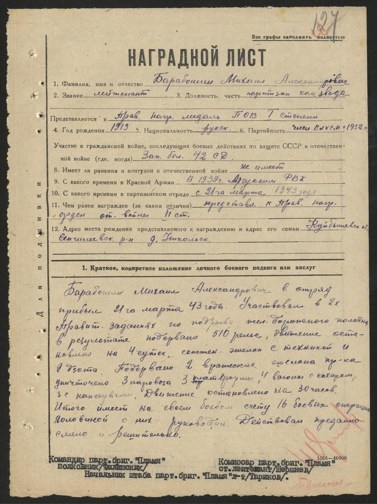
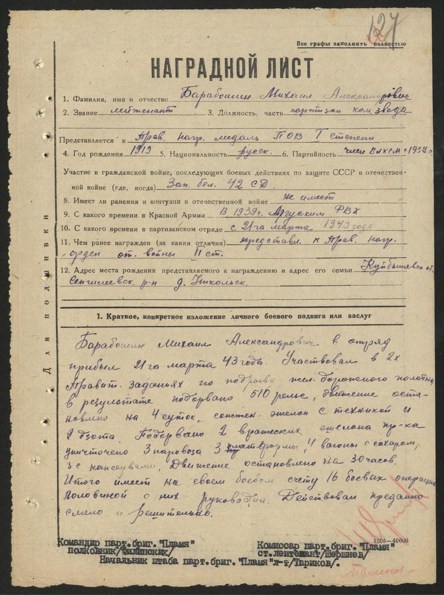

Барабошин
Михаил Александрович
Михаил Александрович
Дата рождения: 1919
Дата рождения: 07.10.1919
Место рождения: с. Никольское, Терингульский р-н, Ульяновская область, РСФСР
Наименование партизанского отряда: отряд «Славы» с 03.1942 по 07.1944
Должность: командир взвода отряда «Слава» партизанской бригады «Пламя»
Награды: медаль «Партизану Отечественной войны» (12 июля 1944), Орден Отечественной войны II-й степени (18.03.1944)
Знак «25 лет победы в ВОв»
Медаль «70 лет Вооруженных сил СССР»
Медаль «60 лет Вооруженных сил СССР»
Медаль «50 лет Вооруженных сил СССР»
Медаль «50 лет Победы в Великой Отечественной войне 1941-1945гг.»
Медаль «40 лет Победы в Великой Отечественной войне1941-1945гг.»
Медаль «30 лет Победы в Великой Отечественной войне 1941-1945гг.»
Медаль «За Победу над Германией в Великой Отечественной войне 1941-1945 гг.»
Медаль «Жукова»
Знак «Ветеран войны 1941-1945гг.»
Медаль «За доблестный труд»
Медаль «Ветеран труда»
Краткая информация о жизни Барабошина Михаила Александровича (сведения из архива)
1. Национальность: русский
2. Образование: с/специальное (педагогическое, военное). В 1938г – педагогическое училище г. Ставрополь.
3. Сведения о составе семьи (супруг/а, дети): супруга: Макаева Вера Сильвестровна, (1919-1997) дочь: Барабошина Галина Михайловна, 14.01.1946 дочь: Барабошина Тамара Михайловна, 20.01.1949
4. Место работы в довоенное время: Был отправлен в Казахстан на ТуркСиб по комсомольской путёвке в школу г. Аягуз. 18.09.1939 призван в армию, служил в Московской области, был командирован в Беларусь в Калинковичское военно-пехотное училище, закончил его 16 июня 1941, был направлен в Брестскую крепость в 455 стрелковый полк 42 СД, прибыл в 8 форт 21 июня 1941 командиром взвода.
5. Место работы в послевоенное время: с 01.09.1944 СШ №1 преподаватель военного дела, учитель начальных классов
6. Дата смерти: 01.03.2003
7. Место захоронения (населённый пункт, кладбище (при возможности указать ряд и номер могилы)): . г. Столин, ул. Пинская левая сторона, 9 ряд, место 9
8. Приложение: (перечень документов из сайта «Память народа» и «Подвиг народа» иные документы) Дата составления карточки: 17. 09. 2021г. (число, месяц, год) Карточку составил: Мозоль Виктория Константиновна
Из воспоминаний правнучки, Киричук Натальи Александровны:
Я хочу рассказать о своём прадедушке Барабошине Михаиле Александровиче, который для меня является примером, олицетворением всех этих качеств
Родился мой прадедушка 7 октября 1919 года в селе Никольском Сенгилеевского района Ульяновской области. Его родители были крестьянами, а в семье, кроме него, ещё 3 детей. Родители постарались дать своим детям образование. И после окончания школы прадедушка поступил в Ставропольское педагогическое училище. В 1938 году после окончания училища, был направлен по комсомольской путёвке в Казахстан на Турксиб в железнодорожную школу. А ещё через год был призван в армию. Служил прадедушка под Москвой, а после армии его командировали в Белоруссию в Калинковичское военно-пехотное училище. Он окончил его в 1941 году. И 20 июня 12 молодых лейтенантов, выпускников училища, прибыли в город Брест. Прадедушку и ещё трёх его друзей направили в 1-й батальон, который находился в 8 форту Брестской крепости.
21 июня командир батальона разрешил вновь прибывшим сходить в город Брест, но пистолеты приказал сдать начальнику штаба, так как в город ходить с оружием запрещалось. Друзья сдали пустые кобуры и, положив пистолеты в карманы, ушли в город. В городе они пробыли до часу ночи. Вернувшись, прямо на полу устроились на ночь и ещё долго разговаривали, делились впечатлениями, волнениями. Ведь на 6 часов утра был назначен смотр боевой техники и занятия на полигоне.
И вот только молодые офицеры заснули, как в 4.15 утра воздух потряс страшный взрыв. Началась война. Части Брестского гарнизона стали подниматься по боевой тревоге. Здесь и пригодилось тайком оставленное оружие. Фашисты обстреливали батальон из миномётов. Силы были неравны, и нашим частям пришлось отступать. Погибло много людей. Рядом с прадедушкой, метров 15, бежал его товарищ. Упала мина. Когда прадедушка поднялся, то увидел, что его друг не встаёт. Он бросился к нему. Оказалось, что тот мёртв: снарядом вырван весь живот. Рядом был небольшой окопчик. Прадедушка стянул убитого в этот окоп, накрыл своим плащом и побежал догонять батальон. Впоследствии прадедушка часто вспоминал этот эпизод. Наверное, потому, что это была первая и такая страшная смерть, которую он видел в той войне.
Второй эпизод, который запомнился ему в этот первый день войны, ярко иллюстрирует мужество и героизм советских воинов:
Шли 6 немецких бомбардировщиков, и откуда-то вынырнул один наш истребитель и завязал с ними бой. Он то пулей летел вертикально вверх, то камнем падал вниз, стреляя по фашистским самолётам. Казалось, вот-вот он
 
